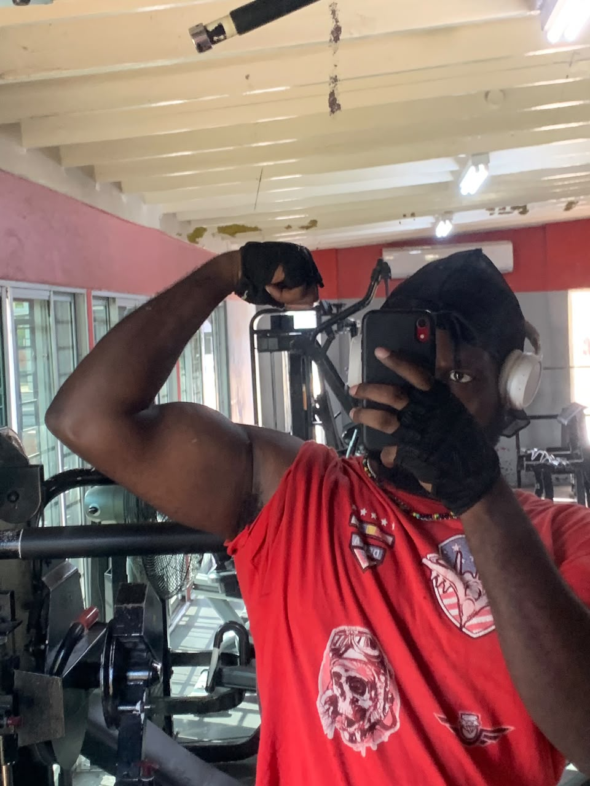

Mark Sterling Jr.
I am a Computer Science student at The University of the West Indies with an interest in technology and cybersecurity. I enjoy learning about computers, programming, and how technology can be used to solve real-world problems. I am also a big anime nerd, with Yu Yu Hakusho being my favorite of all time, and I'm also a gym rat. I have rhotacism, and I'm also left handed.
I am interested in web development because it allows me to combine programming and creativity to build applications that people can interact with. Learning web development also gives me a better understanding of how websites and web applications work.
